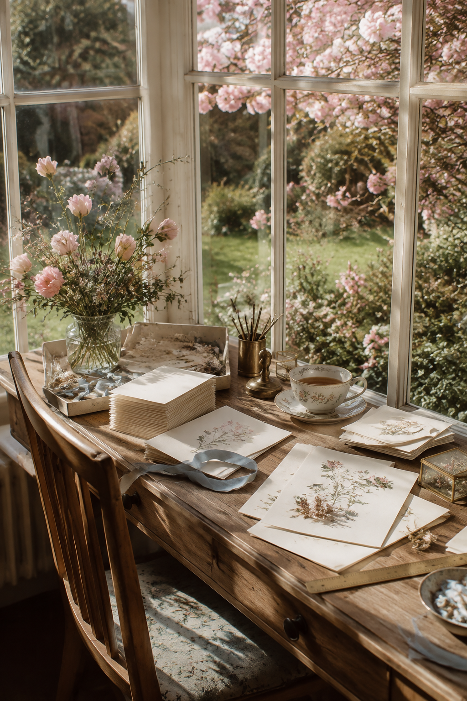
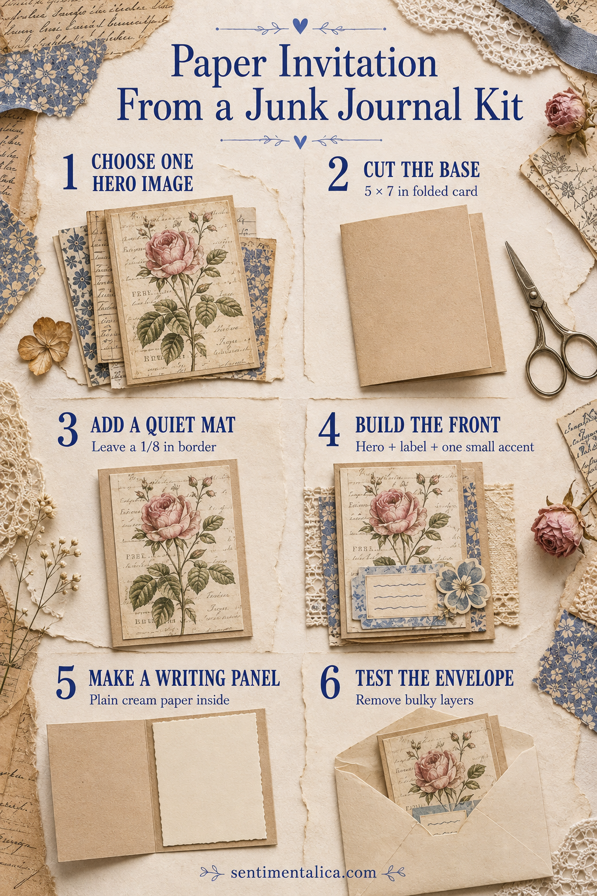

A junk journal kit can become much more than a journal page. Its painted papers, labels, and small decorative details are especially lovely for invitations because they already belong to one visual world. The secret is restraint: choose one hero image, then let the rest support the message.
This method works for a birthday, tea, dinner, shower, small gathering, or any invitation that should feel personal rather than formal.

Choose one hero image
Look through the kit and choose the image you would still love if every other decoration disappeared. A botanical panel, landscape, decorative border, or softly painted object works well. Avoid beginning with five favorites. One clear focal image makes the finished invitation easier to read.
Print a test page on ordinary paper first. Check the size against the folded card and decide what can be trimmed without losing the subject.
Cut and fold the base
For a familiar invitation shape, cut cardstock to 10 × 7 inches and fold it to 5 × 7 inches. Score before folding so the edge stays clean. Medium-weight cardstock is easier to fold than very heavy board and still feels substantial in the hand.
Place the fold at the left or top. A side fold feels like a card; a top fold feels a little more like a small announcement.
Add a quiet mat
Mount the hero image on plain or faintly textured paper, leaving about a 1/8-inch border. Pull the mat color from a quiet part of the image rather than its brightest accent. Cream, parchment, faded blue, or soft sage usually lets the artwork remain the focus.

Build the front in three parts
Use the hero image, a small event label, and one accent. The accent might be a narrow ribbon, tiny flower, torn ledger strip, or postage-sized motif from the kit. Let at least one area of the card remain undecorated.
Before gluing, place the invitation inside its envelope. Lace, thick knots, buttons, and layered flowers can look charming but make the card difficult to mail. If an element catches on the envelope edge, replace it with a flat printed version.
Make the words easy to use
Add a plain cream panel inside. Write or print the essential information with generous spacing: what the gathering is, when it happens, where it is, and how to reply. The inside does not need to repeat the decorative front.
If handwriting makes you nervous, print the wording on a separate panel and attach it after checking every detail. A removable draft prevents a beautiful card from being lost to one incorrect time.
Finish the envelope quietly
Repeat only one detail from the card: a tiny botanical image on the flap, a strip of matching paper inside, or one blue label. Do not make the envelope compete with the invitation.
Make one complete sample before producing the rest. Open it, read it at arm’s length, slide it into the envelope, and leave it overnight under a light book. If it still lies flat and the words are clear, the design is ready to repeat.
The result should feel like a small piece of the journal kit has become correspondence: tactile, personal, and useful without losing the softness that made you choose the artwork.
Browse more paper-craft ideas in the Sentimentalica journal.